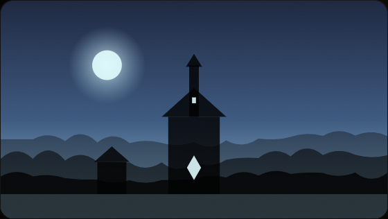

暮色边境 · 第 12 幕
雾灯越过旧城墙

铜钟在河谷里响了第三次。你认出桥对面的旅人，也认出他手中那枚只在旧约里出现的印章。
“你说过，所有交易都必须留下见证。”他没有走近，只让声音穿过雾气。
内核记住了那份承诺，但没有替你决定该如何回应。
下一步3 个可选行动
出发前的准备 · 可多选已选 1 项


铜钟在河谷里响了第三次。你认出桥对面的旅人，也认出他手中那枚只在旧约里出现的印章。
“你说过，所有交易都必须留下见证。”他没有走近，只让声音穿过雾气。
内核记住了那份承诺，但没有替你决定该如何回应。
关键立场、承诺与不可逆行动必须由玩家确认。
角色陈述可以不可靠。系统事实需要来源，但冲突事实的优先级尚未定义。
世界事件按时间、地点和条件推进，不等待玩家触发。
KERNEL_META、能力声明与开局出身预设字段全部登记。
失败与惩罚路径存在，但暂停后的恢复条件还没有定义。
正文篇幅、选项数量与插图时机已约定，结构与样例一致。